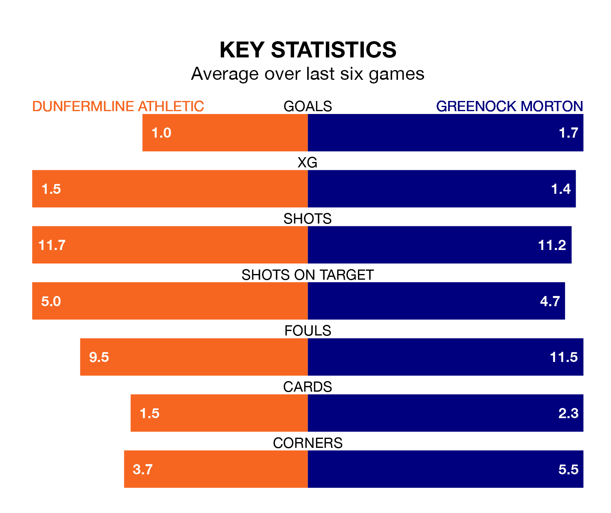

Mid-season relegation candidates Dunfermline Athletic face a challenge against high-flying Greenock Morton at KDM Group East End Park on Saturday.
Dunfermline Athletic are seventh in the Championship table, and have picked up six wins and six draws in their 20 games to date.
The Ton, meanwhile, are fourth in the standings with 29 points, having won eight and drawn five of their first 21 matches, and are 16 points behind table-toppers Dundee United.
Dunfermline are in bad form in the Championship, with no wins and three draws from their last six games.
With three wins and three draws over that period, Greenock Morton's form is much better – they have taken 12 points from 18, compared to Athletic's three.
In the last 10 years, Dunfermline and Greenock Morton have played each other on 29 occasions. Dunfermline won eight of them, Greenock Morton 12, and they drew nine times.
On average, Dunfermline scored 1.2 goals and the Ton 1.4 in those matches.
Their last meeting was on November 3, when Dunfermline won 2-1 away.
In Ryan Mullen, the Ton can rely on one of the league's safest pair of hands. He has kept five clean sheets in his 10 appearances this season, and only two other 'keepers – Dundee United's Jack Walton and Airdrieonians's Joshua Rae – have been able to prevent the opposition scoring on more occasions in the Championship.
In the home team's net, Deniz Mehmet has two clean sheets in 13 games. He has conceded a goal every 87 minutes, more than twice as often as the 214 minutes between goals for Mullen.
With 24 goals in 20 games so far this season, Dunfermline are the league's third-lowest scorers with 1.2 goals per game. But they are conceding fewer than average too, letting in 24 goals at a rate of 1.2 per game.
The visitors are also below average scorers, with 1.3 goals per game, compared to a league average of 1.4. They have also conceded 1.3 goals per game.
Dunfermline's last match was on January 27, a 0-0 draw against Dundee United.
Greenock Morton beat Arbroath 3-0 last time out, also on January 27, with George Oakley, Grant Gillespie and Robbie Muirhead on the scoresheet.
Updated: 13:20 (UTC), 29/01/24